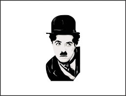
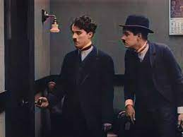
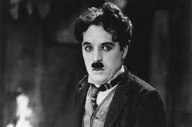

Sir Charles Spencer Chaplin KBE was an English comic actor, filmmaker, and composer who rose to fame in the era of silent film. He became a worldwide icon through his screen persona, The Tramp, and is considered one of the most important figures in the history of the film industry.Charlie Chaplin was one of the greatest and widely loved silent movie stars. From “Easy Street” (1917) to “Modern Times” (1936), he made many of the funniest and most popular films of his time. He was best known for his character, the naive and lovable Little Tramp.

Origin
Sir Charles Spencer Chaplin KBE (16 April 1889 – 25 December 1977) was an English comic actor, filmmaker, and composer who rose to fame in the era of silent film. He became a worldwide icon through his screen persona, The Tramp, and is considered one of the most important figures in the history of the film industry. His career spanned more than 75 years, from childhood in the Victorian era until a year before his death in 1977, and encompassed both adulation and controversy.
Chaplin's childhood in London was one of poverty and hardship, as his father was absent and his mother struggled financially, and he was sent to a workhouse twice before the age of nine. When he was 14, his mother was committed to a mental asylum. Chaplin began performing at an early age, touring music halls and later working as a stage actor and comedian. At 19, he was signed to the prestigious Fred Karno company, which took him to America. He was scouted for the film industry and began appearing in 1914 for Keystone Studios. He soon developed the Tramp persona and formed a large fan base. He directed his own films and continued to hone his craft as he moved to the Essanay, Mutual, and First National corporations. By 1918, he was one of the best-known figures in the world.
Biography
Background and childhood hardship
Charles Spencer Chaplin was born on 16 April 1889 to Hannah Chaplin (née Hill) and Charles Chaplin Sr. There is no official record of his birth, although Chaplin believed he was born at East Street, Walworth, in South London. His parents had married four years previously, at which time Charles Sr. became the legal guardian of Hannah's illegitimate son, Sydney John Hill.At the time of his birth, Chaplin's parents were both music hall entertainers. Hannah, the daughter of a shoemaker, had a brief and unsuccessful career under the stage name Lily Harley, while Charles Sr., a butcher's son,was a popular singer.Although they never divorced, Chaplin's parents were estranged by around 1891. The following year, Hannah gave birth to a third son, George Wheeler Dryden, fathered by the music hall entertainer Leo Dryden. The child was taken by Dryden at six months old, and did not re-enter Chaplin's life for thirty years.
Chaplin's childhood was fraught with poverty and hardship, making his eventual trajectory "the most dramatic of all the rags to riches stories ever told" according to his authorised biographer David Robinson.Chaplin's early years were spent with his mother and brother Sydney in the London district of Kennington; Hannah had no means of income, other than occasional nursing and dressmaking, and Chaplin Sr. provided no financial support.As the situation deteriorated, Chaplin was sent to Lambeth Workhouse when he was seven years old. The council housed him at the Central London District School for paupers, which Chaplin remembered as "a forlorn existence". He was briefly reunited with his mother 18 months later, before Hannah was forced to readmit her family to the workhouse in July 1898. The boys were promptly sent to Norwood Schools, another institution for destitute children.

Stage comedy and vaudeville
Chaplin soon found work with a new company and went on tour with his brother, who was also pursuing an acting career, in a comedy sketch called Repairs.In May 1906, Chaplin joined the juvenile act Casey's Circus, where he developed popular burlesque pieces and was soon the star of the show. By the time the act finished touring in July 1907, the 18-year-old had become an accomplished comedic performer. He struggled to find more work, however, and a brief attempt at a solo act was a failure.
Advertisement from Chaplin's American tour with the Fred Karno comedy company, 1913
Meanwhile, Sydney Chaplin had joined Fred Karno's prestigious comedy company in 1906 and, by 1908, he was one of their key performers.In February, he managed to secure a two-week trial for his younger brother. Karno was initially wary, and considered Chaplin a "pale, puny, sullen-looking youngster" who "looked much too shy to do any good in the theatre".However, the teenager made an impact on his first night at the London Coliseum and he was quickly signed to a contract.Chaplin began by playing a series of minor parts, eventually progressing to starring roles in 1909.In April 1910, he was given the lead in a new sketch, Jimmy the Fearless. It was a big success, and Chaplin received considerable press attention.
Karno selected his new star to join the section of the company, one that also included Stan Laurel, that toured North America's vaudeville circuit.The young comedian headed the show and impressed reviewers, being described as "one of the best pantomime artists ever seen here".His most successful role was a drunk called the "Inebriate Swell", which drew him significant recognition.The tour lasted 21 months, and the troupe returned to England in June 1912.Chaplin recalled that he "had a disquieting feeling of sinking back into a depressing commonplaceness" and was, therefore, delighted when a new tour began in October.

Entering films
Six months into the second American tour, Chaplin was invited to join the New York Motion Picture Company. A representative who had seen his performances thought he could replace Fred Mace, a star of their Keystone Studios who intended to leave.Chaplin thought the Keystone comedies "a crude mélange of rough and rumble", but liked the idea of working in films and rationalised: "Besides, it would mean a new life." He met with the company and signed a $150-per-weekcontract in September 1913. Chaplin arrived in Los Angeles in early December, and began working for the Keystone studio on 5 January 1914.
Chaplin's boss was Mack Sennett, who initially expressed concern that the 24-year-old looked too young.He was not used in a picture until late January, during which time Chaplin attempted to learn the processes of filmmaking. The one-reeler Making a Living marked his film acting debut and was released on 2 February 1914. Chaplin strongly disliked the picture, but one review picked him out as "a comedian of the first water". For his second appearance in front of the camera, Chaplin selected the costume with which he became identified. He described the process in his autobiography:
I added a small moustache, which, I reasoned, would add age without hiding my expression. I had no idea of the character. But the moment I was dressed, the clothes and the makeup made me feel the person he was. I began to know him, and by the time I walked on stage he was fully born.
The film was Mabel's Strange Predicament, but "the Tramp" character, as it became known, debuted to audiences in Kid Auto Races at Venice – shot later than Mabel's Strange Predicament but released two days earlier on 7 February 1914. Chaplin adopted the character as his screen persona and attempted to make suggestions for the films he appeared in. These ideas were dismissed by his directors.During the filming of his 11th picture, Mabel at the Wheel, he clashed with director Mabel Normand and was almost released from his contract. Sennett kept him on, however, when he received orders from exhibitors for more Chaplin films.Sennett also allowed Chaplin to direct his next film himself after Chaplin promised to pay $1,500 if the film was unsuccessful.
Awards and recognition
Chaplin received many awards and honours, especially later in life. In the 1975 New Year Honours, he was appointed a Knight Commander of the Order of the British Empire (KBE).[503] He was also awarded honorary Doctor of Letters degrees by the University of Oxford and the University of Durham in 1962.[321] In 1965, he and Ingmar Bergman were joint winners of the Erasmus Prize and, in 1971, he was appointed a Commander of the National Order of the Legion of Honour by the French government.
From the film industry, Chaplin received a special Golden Lion at the Venice Film Festival in 1972,[506] and a Lifetime Achievement Award from the Lincoln Center Film Society the same year. The latter has since been presented annually to filmmakers as The Chaplin Award.[507] Chaplin was given a star on the Hollywood Walk of Fame in 1972, having been previously excluded because of his political beliefs.[508]
Chaplin received three Academy Awards: an Honorary Award for "versatility and genius in acting, writing, directing, and producing The Circus" in 1929,[179] a second Honorary Award for "the incalculable effect he has had in making motion pictures the art form of this century" in 1972,[338] and a Best Score award in 1973 for Limelight (shared with Ray Rasch and Larry Russell).[424] He was further nominated in the Best Actor, Best Original Screenplay, and Best Picture (as producer) categories for The Great Dictator, and received another Best Original Screenplay nomination for Monsieur Verdoux.[509] In 1976, Chaplin was made a Fellow of the British Academy of Film and Television Arts (BAFTA).[510]
Six of Chaplin's films have been selected for preservation in the National Film Registry by the United States Library of Congress: The Immigrant (1917), The Kid (1921), The Gold Rush (1925), City Lights (1931), Modern Times (1936), and The Great Dictator (1940)